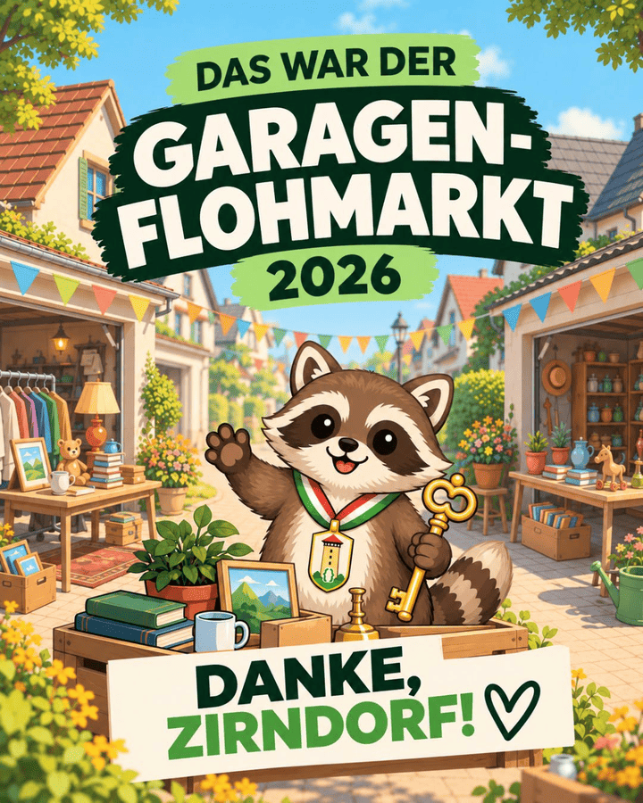
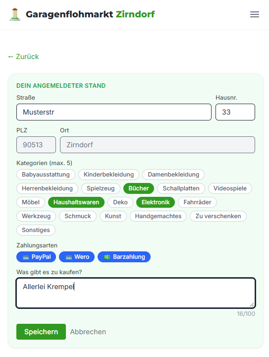
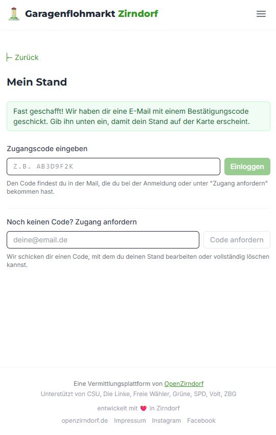
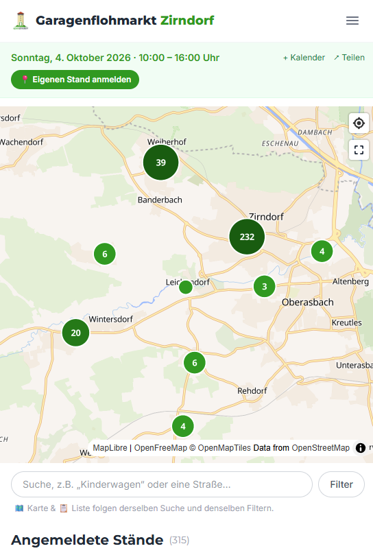
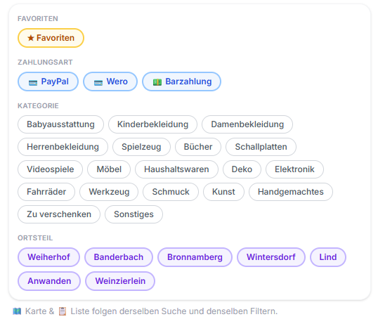

Am 4. Oktober 2026 wurde ganz Zirndorf für einen Tag zum dezentralen Flohmarkt: Garagen, Einfahrten und Höfe wurden zu kleinen Verkaufsständen. Aktuell findet kein Garagenflohmarkt statt – diese Seite blickt zurück.
Ein riesiges Dankeschön an alle Standbetreiber:innen, die mitgemacht, aufgebaut und den Tag überhaupt möglich gemacht haben. Und natürlich genauso an alle Besucher:innen und Käufer:innen, die durch Zirndorf gezogen sind und die vielen Stände mit Leben gefüllt haben.
Danke auch an alle, die bei Organisation, Plakatieren, Weiterverbreiten oder im Hintergrund mit angepackt haben – und an den runden Parteien-Tisch aus CSU, Die Linke, Bündnis 90/Die Grünen, SPD, Freie Wähler, Volt und ZBG. Gemeinsam wurde gezeigt, dass eine parteiübergreifende Idee ganz praktisch etwas für Zirndorf bewegen kann.
Am 18. Oktober ist OpenZirndorf auf dem Zirndorfer Herbstmarkt.
Mehr bei OpenZirndorfKein Installieren, kein Account nötig – die App lief direkt im Browser.




Gebaut für möglichst wenig Aufwand – für Standbetreiber:innen genauso wie für Besucher:innen.
Alle freigegebenen Stände auf einer Karte, filterbar nach Kategorien wie Kleidung, Spielzeug oder Bücher.
Adresse, kurze Beschreibung und Kategorie eintragen – kostenlos, ohne Standgebühr.
Nach kurzer Freigabe erschien der Stand auf der Karte.
Auf Karte und Liste erschien die Adresse statt des echten Namens.
Verwaltung über einen einmaligen Login-Code aus der Bestätigungsmail.
Beschreibung ändern oder den Stand jederzeit vollständig löschen.
Stände durchstöbern, wie es gerade praktischer war.
Kostenlos nutzbar, ohne Account-Pflicht und ohne Tracking.
Reel, Sharepic und Plakat vom Garagenflohmarkt 2026 – frei nutzbar zum Teilen.


Du hast selbst eine Idee für Zirndorf, willst unterstützen oder bei einem Projekt mitmachen? Schau bei OpenZirndorf vorbei.